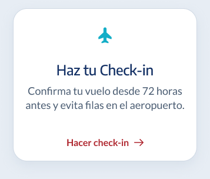
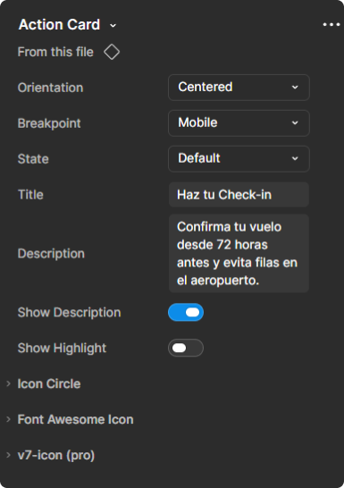

Components
Action Card
Tarjeta con una acción principal destacada.
Live Preview
Resumen
Tarjeta que agrupa un ícono, un título, una descripción opcional y una acción principal para empujar al usuario a una tarea concreta. Se adapta en dos orientaciones —contenido apilado y centrado, o ícono a la izquierda con el contenido en fila— y cambia el tratamiento del CTA según el breakpoint: enlace de texto con flecha en desktop, botón de ancho completo en mobile.
8 variantes = Orientation (2) × Breakpoint (2) × State (2). Todas las combinaciones existen; no hay celdas vacías.
Propiedades
Lo que se puede ajustar en cada instancia de la Action Card.
| Propiedad | Tipo | Descripción |
|---|---|---|
| Orientation | Variant | Centered apila el ícono, el título, la descripción y el CTA en columna centrada, con la acción como enlace debajo del texto. Horizontal ubica el ícono a la izquierda y el contenido en fila, con el CTA como botón alineado a la derecha. Centered es el valor por defecto. |
| Breakpoint | Variant | Desktop muestra el CTA como enlace de texto con flecha. Mobile angosta la tarjeta y convierte el CTA en un botón de ancho completo con borde. Desktop es el valor por defecto. |
| State | Variant | Default no tiene borde. Hover agrega un borde celeste alrededor de toda la tarjeta para indicar interacción. Default es el valor por defecto. |
| Title | Text | Texto del título principal de la tarjeta, mostrado en negrita bajo el ícono. |
| Description | Text | Texto del párrafo bajo el título. Se oculta si Show Description está desactivado. |
| Highlight | Text | Texto de la etiqueta destacada entre la descripción y el CTA. Solo es visible si Show Highlight está activado. |
| Show Description | Boolean | Activado muestra el párrafo de descripción bajo el título. Desactivado lo oculta y deja un espacio entre el título y el CTA. Activado por defecto. |
| Show Highlight | Boolean | Activado muestra el texto de Highlight como etiqueta destacada sobre el CTA. Desactivado la oculta. Desactivado por defecto. |
Anatomía
Dónde vive cada propiedad dentro de la tarjeta.

Icon Circle Title Description Highlight Button (CTA)Highlight se muestra en gris porque Show Highlight viene desactivado: ese es el espacio que ocuparía al activarlo.

Propiedades en Figma